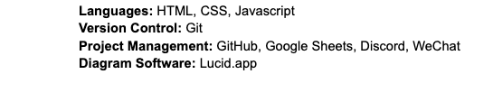

Benjamin Raskin, Student No. 180312330
Chen Jin, Student No. 170631720
Xing Jia, Student No. 180164170
Huiqiao Yang, Student No. 186803710
Yongtai Yang, Student No. 190624980
Mengyuan Liu, Student No. 186802750
Zehao Liu, Student No. 193074000
Ning Nan, Student No. 193064800
Tony Yoon, Student No. 170475670
Shaojun Zheng, Student No. 190665650
Ruicheng Zhao, Student No. 190519490
Wilfrid Laurier University
Gomoku The Gomoku project is aimed to let users play Gomoku everywhere as long as they have an internet connection.
This software integrated a powerful AI that is really difficult to be beaten by human users.
We aim to make Gomoku more popular and help users with using different ways of thinking by building a strong AI.
We aim to build a strong AI that can not be easily beaten by human users with an efficient algorithm and quicker response time.
Also we will make the user interface clean to be sure the element on the interface would not attract too much attention from users when they are thinking.
The biggest constraint on this project will be time. We have a set timeline to accomplish the objectives we have declared. Furthermore, our understanding
of the software we have available to us may be another limitation. It's possible that members will have to learn how to use this software before being
able to implement the objectives. Another constraint is time difference. Many group members are not in Canada and the whole group will suffer from time
difference.
This section will be updated as we progress through the project. Implementation
There will be two major components to this application, front-end and back-end.
Front-end will deal with the user experience/interface. The goal is to create a GUI that is pleasant and easy to use.
The GUI will be appealing; chess board and chess are two necessary elements. Also there will be some button for other
useful function such as history record and the total chess number
Back-end will deal with the algorithms to find the best position on the board to put the chess. The goal is to let the algorithm
“think deeper” to find the “trap” the user makes.
To accomplish all the project requirements, we will divide ourselves into groups and each group will be responsible
for completing certain tasks. One person from the group will be responsible for communicating with the rest of the
team and making their work available for the rest of the team. There will be a testing team who will work on testing
the implementation and assure that the application will be able to work properly for any possible case. The members who
were a part of implementation will not be a part of the testing team.
For this project, we are working with a team of 11 members. We plan on dividing ourselves into smaller groups based on skill
level and interest to work on different aspects of the project such as design, prototyping and implementation. There are
two documentation, Requirements document and SPMP that need to be worked on and updated as we go.
A small group of the team members who are interested in preparing the documentation will be responsible for the documentation.
At least one of the members should be experienced with HTML and take the responsibility of creating the document through HTML.
As per the analysis and design, both must be object-oriented and so the team members working on these should have a fair amount
of knowledge on object-oriented programming or are willing to learn it in the given time frame.
For prototyping, a small group of the team members will be responsible for designing the looks for this application and creating options
for how the users can interact with the application. At least one person should be familiar with UX design and Figma, overall,
everyone should be willing to learn about the UI development process and work with a creative mind set. For front and back end,
the members responsible should be experienced with the languages being used. They should also be willing to put in sometime to learn
new material that may be required for the implementation. The testing crew will be members of the team that have not worked on the
implementation. They should be able to consider all possible cases that might occur when other users start using the application and
make sure the application is capable of handling the cases.
A basic understanding of some software will be required for the completion of this project. Each group member will be responsible for learning
any new material/software that is required to complete the deliverables they have chosen.

The specifications in resource allocation have to deal with more physical aspects of the project, which are universally available to all group members.
The only topic that is relevant to this group is the required skill level of personnel. Group members will assign themselves to the topics that they
feel comfortable contributing to. This will ensure that the work is distributed amongst the group so that everyone contributes in some way to this
project regardless of skill. Group members work on different aspects of the project concurrently. Milestones will be the deliverables mentioned above.
As we go along with the process of developing the application, requirements may change. There will be a few steps to take before any changes are made.
First we have to consider how the change will impact the product and will it be impacted positively or negatively? The next step is to think about
how many changes will be needed based on the new requirements, how large are these changes and do we have enough time to implement these changes?
Lastly, are we capable of implementing such changes based on our skill level. Once these questions are answered, as a team we will decide if we
should go forward with the change or not.
In order to deliver the project on time, we will be maintaining our progress and will have a potential time frame for each task. For each task, we will
decide on an approximate deadline which will be ahead of the actual due date. Within the main tasks we will create subtasks and will have a due date
for each subtask. Along with the due date, we will have a due date two for each sub task as well which will be the final deadline for that subtask.
The first due date will not be a hard due date.
To ensure that we deliver a quality project we will be spending a fair amount of time testing each individual feature as it is developed. The whole team will
have the responsibility of looking for bugs in the code, reporting the bugs, and working together to eliminate these bugs. To keep track of the bugs
there will be a bug tracking spreadsheet where each bug will be reported, where to find the bug in the code, the importance of the bug being fixed,
and how to reproduce the bug.

Quality assurance is key to creating a quality final product. In order to succeed in that we have a plan to ensure that we create the best
Gomoku we can. The most important step in this process is making sure each member of the group looks at and approves of each stage in this
project. That means proper coding practices and style, good informative documentation as well as general software development practices.
Each member should have a good grasp of most of the basic level parts of this project and be able to identify where the project should be
improved or changed. A practice that will help us achieve this is having each member look over the particular part of this project that is
due and coming to meetings with constructive criticism to help improve the overall quality of the project. As a final step that should be
standard is that everyone will test the various aspects of the project. This will help catch any obscure errors or bugs that might not have
been caught by the programmer who wrote the code in the first place. The combination of all of these processes will help develop a high
quality final product.